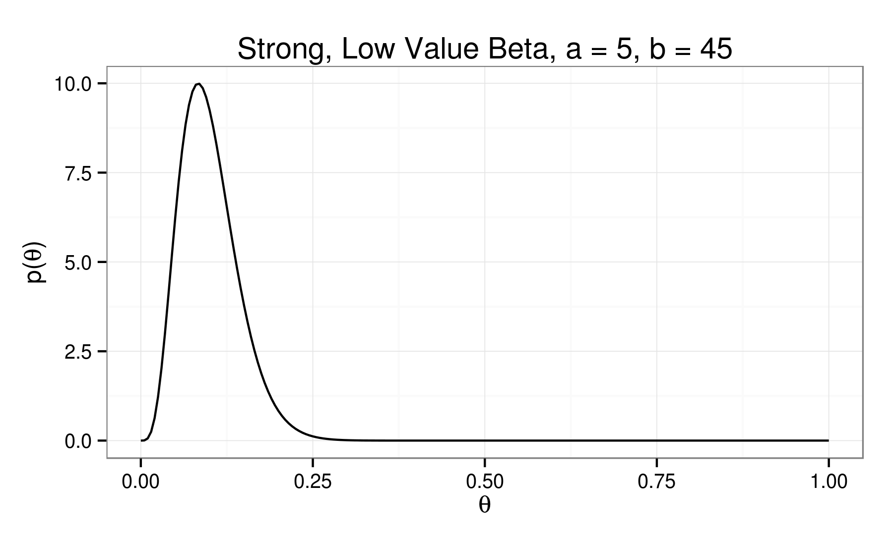
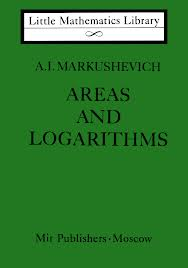

The Basic Basics:
Bayesian Inference
on a Binomial Proportion
Rob Mealey
"And you are?"
By a show of hands:
- Stats?
- Probability?
- Equations?
- Bayes?
- Code?
A Chickensh** Disclaimer
I'll do my best
not to be tedious
about it...
"Tell em what you’re gonna tell em..."
- A Conceptual Introduction to Bayesian Data Analysis
- A Few Equations...Ok, a lot of equations.
- A Little Code
- Pretty Pictures
- Maybe A Little History
Fast But Useless Introductions™:
Probability
Probability allows us to quantify our uncertainty...
Probabilities:
- Point probabilities: $80\%$ chance of rain
- Probability range
- Probability distribution:
- A model of uncertainty around some value or process
- A function: $y = f(x)$
- Describes the likelihood of specific values of some random variable.
Rules:
- The probability of all possible values of a random variable always sums (or integrates) to 1.
- Joint: probability of A and B $$ p(A,B) = p(B,A) = p(A) p(B) $$
- Marginal: probability of A $$ p(A) = p(A)p(B) + p(A)p(\text{not }B)$$
- Conditional: probability of A given x $$ p(A|B) = p(A \text{ and }B) p(B)$$
>
What does normal mean, anyway?
$$ p(x | \mu, \sigma^2) = \frac{1}{\sigma \sqrt{2\pi}} e^{{-\frac{1}{2}} (\frac{x-\mu}{\sigma} )^2} $$
Fast But Useless Introductions™: Bayes Theorem
You need the joint, man...
and the conditional...
This equivalence...
$$ p(A \text{ and } B) = p(B \text{ and } A)$$
and this definition...
$$ \Rightarrow p(A,B) = p(A|B) p(B) $$
$$ \Rightarrow p(B,A) = p(B|A) p(A) $$
$$ p(A \text{ and } B) = p(A \text{ given } B) p(B) $$
$$ p(A \text{ and } B) = p(B \text{ given } A) p(A) $$
implies this relationship...
$$ \Rightarrow p(A|B) p(B) = p(B|A) p(A) $$
$$ p(A \text{ given } B) p(B) = p(B \text{ given } A) p(A) $$
Which gives us Bayes Theorem.
$$ \Rightarrow p(A|B) = \frac{p(B|A) p(A)}{p(B)} $$
$$ p(A \text{ given } B) = \frac{p(B \text{ given } A) p(A)}{p(B)} $$
Works both ways, obviously.
$$ p(B|A) = \frac{p(A|B) p(A)}{p(A)} $$
$$ p(B \text{ given } A) = \frac{p(A \text{ given } B) p(A)}{p(A)} $$
A very accurate test for a very rare disease:
Test $98\%$ accurate
$0.2\%$ of population have disease
$p(\text{positive}|\text{disease}) = 0.98$
$p(\text{disease}) = 0.002$
$p(\text{positive}) = p(\text{positive}|\text{disease}) p(\text{disease})
+ p(\text{positive}|\text{no disease}) p(\text{no disease})$
$p(\text{disease}|\text{positive}) = \frac{p(\text{positive}|\text{disease})
p(\text{disease})}{p(\text{positive})} = \frac{0.98 * 0.002}{0.98 * 0.002 + 0.02 * 0.998} = \frac{0.000196}{0.020156} = 0.00894 $
$p(\text{disease}|\text{positive}) = 0.00894 $
$0.89\%$ chance of having disease
given an initial positive test
The version we will use...
$$ p( \theta | Y ) = \frac{p( Y | \theta ) \times p( \theta )}{p( Y )} $$
$$ p(\text{parameter} | \text{data} ) = \frac{p( \text{data} | \text{parameter} ) \times p( \text{parameter} )}{p( \text{data} )} $$
Up to a multiplicative constant...
$$ p( \theta | Y ) \propto p( Y | \theta ) \times p( \theta ) $$
$$ p(\text{parameter} | \text{data} ) \text{ is proportional to } p( \text{data} | \text{parameter} ) \times p( \text{parameter} ) $$
The Prior times the Likelihood
is Proportional to the Posterior.
So you want to analyze some data...
How it begins:
What A Classical Data Analysis Gives Us:
Point estimates
p values: the probability of observing our sample data under the hypothesis that the true value of the parameter is 0...
Confidence interval: not a probability range...
An interval that contains all the estimates for our parameter
of interest for which we do not reject a null hypothesis
of equality with our "true" parameter of interest...
All implicitly conditional on our assumptions
(and maybe lots of other assumptions)
Advantages of Classical Data Analysis
There are reasons...
Easier to DO (and scale).
Pre-packaged, widely adopted, off-the-shelf solutions.
Often computationally simpler.
Easier to black-box it.
Disadvantages of Classical Data Analysis
Inflexible

Asymptotic justifications...
What A Bayesian Data Analysis Gives Us:
Probability distributions!
Explicitly conditional on our assumptions!
Advantages of Bayesian Data Analysis
It's all probability...
Disadvantages of Bayesian Data Analysis
More time
feeling dumb.
More difficult to scale.
Few widely adopted off-the-shelf solutions.
And now for the main event...
Our Data: Observations of some process with just two outcomes
Lots of real-world processes
can be modeled like this.
\(Z\) is every occurences of \(z_i\),
whether or not they've already "happened"...
whether or not they'll all ever happen...
$$ Z = z_0,z_1,... $$
The outcome of any $z_i$ can only be either $A$ or $B$.
i.e. A free throw can either be made or missed...
$$ z_i \in (A, B) \forall i $$
In order to model
a process mathematically,
we have to define
one outcome as...
a success...
and the other as a failure.
$$
y = \begin{cases}
1 & \text{if } z==A \\
0 & \text{if } z==B
\end{cases}
$$
$\theta$ equals the proportion
of the $N$ cases of $Z$
equal to $A$...
$$ \theta = \frac{\Sigma_{i=1}^{N} y_i}{N} = \frac{Y}{N} $$
The Binomial Distribution:
$$ p(Y) = {N \choose Y} \theta^Y (1-\theta)^{(N-Y)} $$
$$ p(y_i) = \theta^{y_i} (1-\theta)^{(1-y_i)} $$
$$\theta = 0.2$$
$$\theta = 0.5$$
$$\theta = 0.8$$
Playing make-believe...
-
We don't know $\theta$...
## Generate Theta: Unknown Probability of Success
## Using built-in R pseudo-random number generator
theta_true <- runif(1,0,1)
-
We don't know even know $N$...
## N is random integer between 100,000 and 400,000
N = sample(seq(100000,400000),1)
- Our Dataset:
## A is successes proportion of N
A = round(theta_true*N)
## B is the rest of N
B = N - A
## Zpop is randomly shuffled A successes and B failures
Zpop <- sample(c(rep(1,A),rep(0,B)))
Our population...
The Prior:
$$p( \theta )$$
$$p( \theta | Y ) \propto p( Y | \theta ) \times p( \theta )$$
Beta Distribution:
\[ p(\theta) = \theta^{(\alpha - 1)} (1 - \theta)^{(\beta - 1)} \]

A Visit with Conjugacy...
$$ p(\theta) = \theta^{(\alpha - 1)} (1 - \theta)^{(\beta - 1)} $$
$$ p(Y|\theta) = \theta^Y (1-\theta)^{(N-Y)} $$
$$ p(Y|\theta) \times p(\theta) = $$
$$\theta^{(Y + \alpha -1)} (1-\theta)^{(N - Y + \beta - 1)} $$
$$ mean[p(Y|\theta)] = \theta = \frac{\theta \times N}{N} $$
$$ mean[p(\theta)] = \frac{\alpha}{\alpha + \beta} $$
$$ m = \frac{\alpha}{\alpha + \beta} $$
$$ n = \alpha + \beta $$
$$ \alpha = m \times n $$
$$ \beta = (1 - m) \times n $$
### Function: Prior Plot Values
###################################################
### Function: Prior Plot Values
###################################################
Prior <- function(m, n, a=n*m, b=n*(1-m)){
dom <- seq(0,1,0.005)
val <- dbeta(dom,a,b)
return(data.frame('x'=dom, 'y'=val))
}
$$ p(\theta) = \theta^{(nm) - 1} (1-\theta)^{(n(1-m)) - 1} $$
The Likelihood:
$$ p( Y | \theta ) $$
$$ p( \theta | Y ) \propto p( Y | \theta ) \times p( \theta )$$
###################################################
### Function: Likelihood Plot Values
###################################################
Likelihood <- function(N, Y){
a <- Y + 1
b <- N - Y + 1
dom <- seq(0,1,0.005)
val <- dbeta(dom,a,b)
return(data.frame('x'=dom, 'y'=val))
}
$$ p( Y | \theta ) = \theta^{(Y)} (1-\theta)^{(N - Y)} $$
The Posterior:
$$p( \theta | Y ) \propto p( Y | \theta ) \times p( \theta )$$
$$p( \theta | Y ) \propto [\theta^{(Y)} (1-\theta)^{(N - Y)}] \times [\theta^{(nm)} (1-\theta)^{(n(1-m))}] $$
$$p( \theta | Y ) \propto [\theta^{(Y + nm)} (1-\theta)^{(N - Y + n(1-m))}]$$
###################################################
### Function: Posterior Plot Values
###################################################
Posterior <- function(m, n, N, Y, a_in=n*m, b_in=n*(1-m)){
a_out <- Y + a_in - 1
b_out <- N - Y + b_in - 1
dom <- seq(0,1,0.005)
val <- dbeta(dom,a_out,b_out)
return(data.frame('x'=dom, 'y'=val))
}
$$ p( \theta | Y ) \propto \theta^{(Y + nm)} (1-\theta)^{(N - Y + n(1-m))} $$
###################################################
### Function: Posterior Plot Values
###################################################
Posterior <- function(m, n, N, Y, a_in=n*m, b_in=n*(1-m)){
a_out <- Y + a_in - 1
b_out <- N - Y + b_in - 1
dom <- seq(0,1,0.005)
val <- dbeta(dom,a_out,b_out)
return(data.frame('x'=dom, 'y'=val))
}
$$ \beta + 1 = N - Y + n(1-m)$$ $$\rightarrow \beta = N - Y + n(1-m) - 1 $$
$$ \alpha + 1 = (Y + nm)$$ $$\rightarrow \alpha = Y + nm - 1 $$
###################################################
### Function: Mean of Posterior Beta
###################################################
MeanOfPosterior <- function(m, n, N, Y, a=n*m, b=n*(1-m)){
a_out <- Y + a - 1
b_out <- N - Y + b - 1
E_posterior <- a_out / (a_out + b_out)
return(E_posterior)
}
###################################################
### Function: Mode of Posterior Beta
###################################################
ModeOfPosterior <- function(m, n, N, Y, a=n*m, b=n*(1-m)){
a_out <- Y + a - 1
b_out <- N - Y + b - 1
mode_posterior <- (a_out - 1)/(a_out + b_out - 2)
return(mode_posterior)
}
###################################################
### Function: Standard Deviation of Posterior Beta
###################################################
StdDevOfPosterior <- function(m, n, N, Y, a=n*m, b=n*(1-m)){
a_out <- Y + a - 1
b_out <- N - Y + b - 1
sigma_posterior <- sqrt((a_out*b_out)/(((a_out+b_out)^2)*(a_out+b_out+1)))
return(sigma_posterior)
}
Our population...
Our sample...
$N_{samp} = 500 $
$Y_{samp} = 26 $
$ p(Y_{samp}|\theta, N) = \theta^{26} (1-\theta)^{(500 - 26)}$
$p(Y_{samp}|\theta) = \theta^{26} (1-\theta)^{474}$
$(\theta_{samp} = \frac{Y_{samp}}{n} = \frac{26}{474} = 0.052)$
Testing out different priors...
So how'd we do?
Results...
| Prior | Mean | Mode | Std Dev | Alpha | Beta |
| Uniform | 0.0520 | 0.0502 | 0.0099 | 26 | 474 |
| Bimodal | 0.0511 | 0.0493 | 0.0098 | 25.5 | 473.5 |
| Weak High | 0.0669 | 0.0652 | 0.0111 | 34 | 474 |
| Weak Equal | 0.0591 | 0.0573 | 0.0104 | 30 | 478 |
| Weak Low | 0.0512 | 0.0494 | 0.0098 | 26 | 482 |
| Strong High | 0.1923 | 0.1913 | 0.0161 | 115 | 483 |
| Strong Equal | 0.1254 | 0.1242 | 0.0135 | 75 | 523 |
| Strong Low | 0.0585 | 0.0570 | 0.0096 | 35 | 563 |
$$\theta_{true} = 0.042$$
Our population...
$$\theta_{mle} = \frac{Y_{samp}}{n} = \frac{26}{474} = 0.052$$
A p value...
a p value...
And for my next trick...
Using only these models...
#### 2008 Election ####
# 2008 Parameters
elecDay <- '2008-11-04'
cutOff <- '2008-08-01'
elecPassed = T
elecType <- 'President'
candidates <- list('d'='Obama','r'='McCain')
d_m = 0.5
r_m = 0.5
init_n = 2
Two binomial proportion models, one for each candidate.
The prior for each update after the first
is the posterior of the last model.
The Data...
Any one affiliated with Real Clear Politics?
18 states with full polling data still 'available'...
RCP Predictions
| | Obama | McCain | Predicted Outcome | Predicted Winner | Forecast Error |
| FL | 49.00 | 47.20 | 1.80 | Obama | 1.00 |
| IN | 46.40 | 47.80 | -1.40 | McCain | 2.50 |
| MO | 47.80 | 48.50 | -0.70 | McCain | 0.60 |
| NC | 48.00 | 48.40 | -0.40 | McCain | 0.70 |
| NH | 52.80 | 42.20 | 10.60 | Obama | 1.00 |
| OH | 48.80 | 46.30 | 2.50 | Obama | 2.10 |
| VA | 50.20 | 45.80 | 4.40 | Obama | 1.90 |
RCP Predictions
My Predictions
| | Obama | McCain | Predicted Outcome | Predicted Winner | Forecast Error |
| FL | 47.40 | 46.50 | 0.90 | Obama | 1.90 |
| IN | 46.50 | 47.40 | -0.90 | McCain | 2.00 |
| MO | 47.40 | 47.70 | -0.30 | McCain | 0.20 |
| NC | 47.40 | 47.30 | 0.10 | Obama | 0.20 |
| NH | 50.70 | 42.60 | 8.10 | Obama | 1.50 |
| OH | 47.80 | 45.30 | 2.50 | Obama | 2.10 |
| VA | 49.40 | 45.50 | 3.90 | Obama | 2.40 |
My Predictions
Actual Outcomes
| | Obama | McCain | Outcome | Winner |
| FL | 51.00 | 48.20 | 2.80 | Obama |
| IN | 50.00 | 48.90 | 1.10 | Obama |
| MO | 49.30 | 49.40 | -0.10 | McCain |
| NC | 49.70 | 49.40 | 0.30 | Obama |
| NH | 54.10 | 44.50 | 9.60 | Obama |
| OH | 51.50 | 46.90 | 4.60 | Obama |
| VA | 52.60 | 46.30 | 6.30 | Obama |
Actual Outcomes
Performance...
| | RMSE | RMSE, Diff < 2% | Number Correctly Predicted |
| My Predictions | 4.27 | 1.17 | 17.00 |
| RealClearPolitics Predictions | 3.23 | 1.54 | 16.00 |
So what about...
RCP Predictions
| | Obama | Romney | Outcome | Winner |
| CO | 48.70 | 45.80 | 2.90 | Obama |
| FL | 49.30 | 46.10 | 3.20 | Obama |
| MO | 43.00 | 50.30 | -7.30 | Romney |
| NC | 47.80 | 46.70 | 1.10 | Obama |
| NH | 48.70 | 45.70 | 3.00 | Obama |
| VA | 48.70 | 45.00 | 3.70 | Obama |
RCP Predictions
My Predictions
| | Obama | Romney | Outcome | Winner |
| CO | 47.90 | 46.10 | 1.80 | Obama |
| FL | 48.10 | 46.30 | 1.80 | Obama |
| MO | 42.70 | 49.30 | -6.60 | Romney |
| NC | 46.60 | 47.20 | -0.60 | Romney |
| NH | 49.00 | 44.80 | 4.20 | Obama |
| VA | 47.80 | 45.50 | 2.30 | Obama |
My Predictions
And if we have time...
A Tiny Bit of Context: The Holy War
"SUBJECTIVE!" "UNINTUITIVE!" "ASYMPTOTIC!" "INTRACTABLE!"
Pierre LaPlace:
"I'm pretty famous."

"The theory of probabilities is at bottom nothing but common sense reduced to calculus;
it enables us to appreciate with exactness that which accurate minds
feel with a sort of instinct for which of times they are unable to account."
What's the collective noun
for a group of statisticians?
A "quarrel".
In the Bayesian corner...
Harold Jeffreys
"Oh.
Oh dear. Well, then.
I do believe... I definitely don't..."
"The scientific method is neither deduction from a
set of axioms nor a way of making plausible guesses,
as Bertrand Russell said; but that it is a matter of
successive approximation to probability distributions."
And the winner...
R. A. Fisher:

"Clever.
Now I will
ruin you."
"Critical tests of this kind may be called tests of significance,
and when such tests are available we may discover whether a second sample is or is not significantly different from the first."



Manhattan Project:
Human "Computers" at Work...
But the thing is...
Enough of that...
All the code for both the simulation and electoral model is up on github...
Simulation Code
Election Code
Questions?